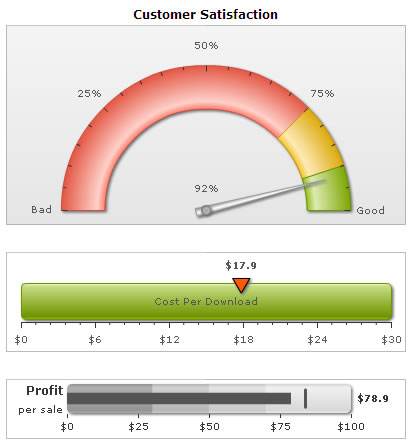

Creating your First Chart > Multiple Charts in a single page |
Using FusionWidgets, you can embed any number of charts in the same HTML page. The process of embedding multiple charts is similar to that of embedding a single chart. You just need to take care of the following:
Shown below is an example page containing multiple charts. The page is named as MultiChart.html and is stored in MyFirstChart folder itself. |
<html> <body bgcolor="#ffffff">
</body> |
As you can see here, we've embedded three charts in the page:
We've also built 2 new XMLs for the linear gauge and bullet graph. We've not shown them here, as we'll covering them in the XML structure of the respective charts. When you finally view the HTML page (with some formatting applied to above code), you'll get a result as shown under: |
|  |
| Using the above way, you can embed any number of charts in your HTML page. You can even mix charts and maps from different products in FusionCharts suite (FusionCharts v3, FusionMaps v3, PowerCharts v3 & FusionWidgets v3) and use them on the same page. |